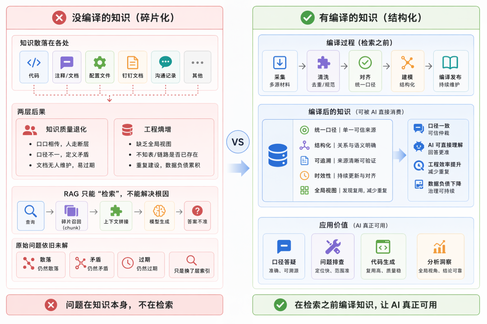
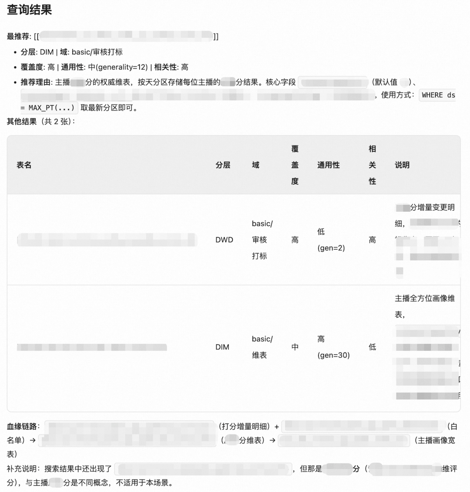
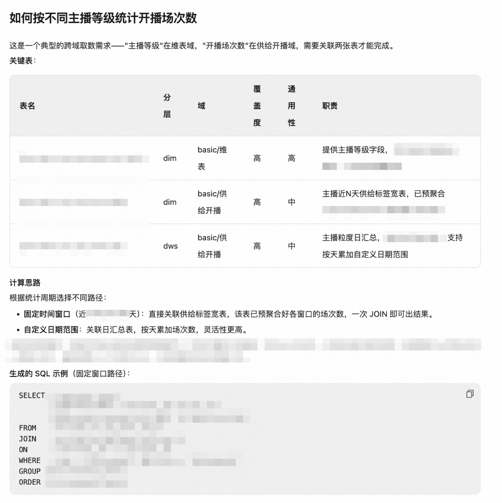
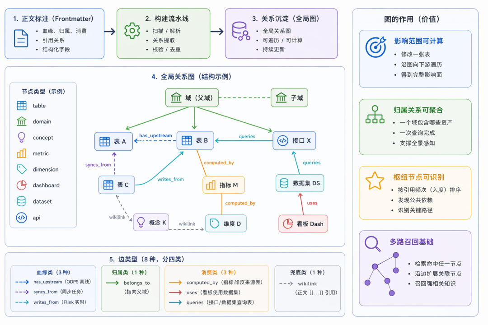
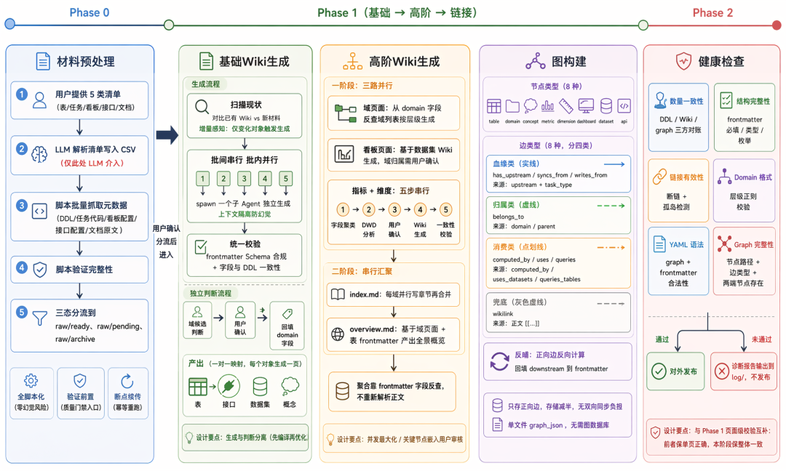

本文介绍直播数据团队构建LLM Wiki以解决领域知识散落、矛盾及易腐化难题的实践。传统RAG无法根治知识质量退化，LLM Wiki通过“编译”将DDL、代码等源材料转化为结构化、可验证的知识资产。其核心在于Schema契约、显式关系图及分层架构，结合Agent编排实现自动化构建与检索。实践表明，该方案在指标召回、SQL生成及模型迭代中显著提效，如血缘查询提速15倍，遗漏率降为0%，实现了从机械劳动到高价值决策的转变，为AI时代提供了高质量知识底座。
为什么要知识库
领域知识决定了 AI 在业务中能发挥多大的价值和作用。任何 AI 系统都由模型、知识、架构三部分组成。模型由供应商提供，只能被动接受；架构常因模型能力升级而失效重做。相比之下，领域知识只能从内部积累——不可替代，且随业务演进而持续变化，是最值得长期投入的部分。
然而，领域知识的沉淀面临诸多挑战，在数据团队中尤为严重。知识散落在代码和注释、配置、钉钉文档、沟通记录等各处，没有统一载体，这带来两层后果：
知识质量退化：传播靠口口相传，人走知识就断；口径不一致，同一指标在不同文档里定义矛盾，没人能仲裁；即便有人写了文档也无人持续维护，三个月后就和线上对不上。
工程熵增：缺乏全局视图，团队无法判断一张表是否已经存在、一条链路是否已有人建过，重复建设不断累积数据负债。
数据团队中如口径答疑、问题排查、代码生成这些本可以被 AI 极大提效的场景，都卡在了"知识喂不进去"这一步。
直接套 RAG 解决不了这件事。RAG 的模式是每次查询都到原始文档碎片里现找现拼——chunk 召回、上下文拼接、模型生成——但它并不改变原始材料本身的状态。散落的还是散落的，矛盾的还是矛盾的，过期的还是过期的，只是多了一层向量索引。知识本身的问题一个没解决，只是把"人找不到"变成了"AI找到了但答不准"。
问题出在知识本身，不在检索。需要的是在检索之前加一道"编译过程"——把散落、矛盾、易腐化的源材料，预先加工为可被AI直接消费的知识。这是 LLM Wiki 的起点。

实际效果
先来看看实际效果，下面从指标维度召回、SQL代码生成以及数据模型迭代4个例子来介绍LLM Wiki的检索生成效果。
▐ 2.1 指标和维度召回
主播xxx分维度召回
以"主播xxx分用哪张表"为例，系统首先通过 index.md 定位到 basic/审核打标域，然后全域搜索召回候选表，再逐张读取详情页判断覆盖度和相关性。最终精准推荐xxx分维表作为首选，同时区分出 DWD 增量明细表（适合追溯变更历史）和主播画像宽表（适合同时需要xxx分和其他属性时），并主动排除了名称相似但实际是"讲解xxx分"的干扰项。

2.1.2 xxx交易指标召回
用户问"xxx交易指标怎么取"，系统经域推断 → 多路搜索 → 详情验证三步，精准推荐 DIM 层标签表（直接有xxx字段）和 DWD 层明细表（xxx标记字段可自行聚合），并附带判定逻辑、SQL 示例和血缘链路，一次查询给出从选表到取数的完整答案。

▐ 2.2 SQL代码生成
用户问"不同主播等级的开播场次数怎么算"，系统自动跨维表域和供给开播域，定位到主播基础信息宽表（主播等级）+ 主播标签预聚合表（预聚合多窗口场次数）或主播开播日汇总表（按天累加自定义范围），输出 JOIN 关联的 SQL 骨架，同时标注废弃字段、xx开播口径和多套分级体系的差异——从自然语言到可执行 SQL，一步到位。

▐ 2.3 数据模型迭代
2.3.1 背景
数据模型迭代是数仓日常工作中高频且高风险的场景。一次迭代往往涉及：
上下游传播：变更沿血缘链路传导，影响可达数十张下游表
阈值/规则联动：字段参与 WHERE 条件、CASE WHEN 分档，改错会导致业务判定失效
口径一致性：新旧口径差异可能引入数据偏差，需双跑验证
需求理解 → 查表结构 → 查血缘 → 判影响 → 估风险 → 写SQL → 验数据↓ ↓ ↓ ↓ ↓ ↓ ↓人工耗时 grep搜索 手动递归 看代码 凭经验 逐表改写 手写SQL
传统做法依赖人工逐表排查 SQL 代码，耗时易出错，迫切需要一种新范式，让 AI 承担"查血缘、判风险、写代码"的机械工作，将人力聚焦在"决策确认"环节。
2.3.2 基于LLM wiki的数据模型迭代
步骤 | 做什么 | 输入→输出 |
需求拆解 | 理解需求，识别需求类型 | 需求描述 → 需求类型 + 指标口径 |
知识库召回 | 从Wiki查目标表，拉取DDL和口径定义 | 表名 → 表结构 + 口径说明 |
血缘查询 | 用graph.json查全链路下游，强制完整性校验 | 目标表 → 下游表完整列表 |
风险评级 | 看下游SQL，判断业务影响（高/中/低）+ 风险类型 | 下游表 → 二维风险矩阵 |
SQL生成 | 批量生成DDL+ETL+验证SQL+回滚SQL | 影响分析 → 全套SQL文件 |
报告输出 | 整合分析结果，生成影响分析报告 | 全流程结果 → 可交付报告 |
2.3.3 具体实践场景
场景一：数据源切换（data_source_switch）
需求：xxx数据从加权计算切换到大盘数据源
流程：
Step 1：确认切换含义（直接引用 vs 重新计算）
Step 3：查全链路下游血缘，发现 12 张间接下游表
Step 4 路径A：看下游 SQL，发现阈值判定→ 业务影响=高
Step 5：生成目标表改造 SQL + 12 张下游表适配 SQL + 口径对比 SQL
关键发现：间接下游表中有 3 张参与准入判定，切换后阈值需调整
场景二：新增字段（addition）
需求：xxx数据链路新增"xxx分"等字段
流程：
Step 1：确认指标一一映射
Step 4 路径B：列出 ** 张候选下游表，用户确认传播范围（选中 * 张）
Step 5：逐表判断血缘 JOIN 状态 → 生成 * 张下游表适配 SQL
关键机制：路径B 强制用户确认，避免遗漏或过度传播
2.3.4 最终效果
事项 | 传统人工 | AI 编排 | 提效 |
血缘查询时间 | 30min（手动递归） | 2min（--impact） | 15× |
下游表遗漏率 | 20%（间接下游易遗漏） | 0%（强制完整性校验） | 100% |
SQL 生成时间 | 0.5天（逐表改写） | 10min（批量生成） | 72× |
风险判定一致性 | 低（凭经验） | 高（二维矩阵标准化） | 质变 |
2.3.5 总结
通过 model-iteration-analysis 编排架构：
全流程自动化：从需求输入到 SQL 输出，人工只做"三道确认"
血缘完整性保障：下游详情补全，杜绝遗漏
风险量化评级：二维矩阵替代模糊描述，判定标准一致
状态可追溯：单一状态文件记录完整分析链路
最终效果：模型迭代影响分析从半天缩短到小时级，下游表遗漏率从 20%降到 0%，数据研发工程师从"查代码、写 SQL"的机械工作中解放，聚焦在"决策确认"的高价值环节。
LLM 编译器：怎么建
▐ 3.1 核心思想

LLM Wiki 不是一份"用 LLM 写出来的文档"，而是一份结构化、有约束、可验证的知识资产。它和传统文档的区别在四个层面：
结构可解析——单页内部结构。每个页面是 frontmatter + 正文的双层结构，frontmatter 是脚本可解析的 YAML，承载关系字段（type、domain、upstream、computed_by 等），正文承载语义描述。脚本可直接读取关系信息，不必依赖 LLM 反复解析正文。
层级可下钻——跨页层级结构。域按业务主题嵌套组织，形成可逐层下钻的树。Agent 检索时可从根域渐进披露，避免一次性灌入全部上下文。
关系可遍历——跨页关系结构。页面之间的血缘、归属、消费、引用关系以边的形式显式记录，构成有向图。脚本可遍历、可计算影响范围、可做多跳召回。
正确性可度量——分结构、语义、人工三层校验。结构层用机械规则做自动化约束；语义层用 LLM 评审页面内容（描述准确性、口径一致性、域归属合理性）；关键节点由人工确认兜底。三层叠加，知识库正确性从主观判断转为可度量的工程指标。
让 LLM 来建，不是让人来建。人工维护 Wiki 的核心问题是成本高、腐化快、难持续。LLM 作为编译器，把散落的源材料（DDL、任务代码、文档、接口配置）编译成结构化页面，人只在关键节点做确认。
整体构建过程可以抽象为六个步骤：提取 → 生成 → 归类 → 聚合 → 链接 → 验证——对应编译器的词法分析、代码生成、作用域解析、IR 构建、链接、静态分析，本质是一条将散落源材料编译为结构化知识的流水线。

▐ 3.2 LLM Wiki 与 RAG：互补而非冲突
一个常见的疑问是：有了 LLM Wiki 是否还需要 RAG？需要，但两者定位完全不同。
可以用"编译时 vs 运行时"来理解。LLM Wiki 是编译时产物，把原始材料预处理成高质量的知识页面；RAG 是运行时手段，在查询时刻做精准召回。
Wiki 在构建阶段把散落材料固化为完整语义单元——血缘关系显式记录、口径以代码为准做仲裁、层级结构支持渐进式披露、每个页面自带 frontmatter 元数据。RAG 在查询时刻基于这些页面做精准召回：frontmatter 用于硬过滤（按层级、域、血缘），正文用于语义匹配，Wiki 尚未覆盖的长尾知识仍可回退到原始材料检索。
一句话：Wiki 提供高质量语料，RAG 提供精准召回，组合起来才是完整的检索栈。
▐ 3.3 知识来源要全
Wiki 编译的目标是让 AI 能回答业务问题，而一个业务问题往往跨越多种知识载体：表定义结构、接口定义契约、看板定义消费场景、文档承载业务背景。材料缺一类，编译出的 Wiki 就有相应的盲区——只有 DDL 没有任务代码，AI 知道字段叫什么但不知道怎么算；有表没有看板，AI 知道数据存在哪但不知道谁在用。材料的完整度直接决定了 Wiki 能回答的问题边界。
因此知识来源需要从广度和深度两个维度保障：
广度：分为编译时知识和运行时知识，两类知识各司其职，编译时知识提供"是什么、怎么算、怎么连"，运行时知识提供"现在长什么样"。
编译时知识：将相对稳定的知识在构建阶段固化为 Wiki 页面，覆盖 5 类载体——表（DDL）、接口（Config + Version）、文档（钉钉文档）、任务（独立任务代码）、看板（看板元数据）。
运行时知识：对查询那一刻才能确定的信息（物理表数据、任务日志、监控指标等）通过 Agent 工具调用现取，不进 Wiki。
深度：每张表不止抓 DDL，还要抓产出任务代码。DDL 提供结构信息（字段、类型、注释），任务代码提供逻辑信息（计算方式、过滤条件、聚合维度、上游依赖）。只有 DDL 的 Wiki 仅是骨架，加上任务代码才构成完整的知识。
▐ 3.4 知识构建要准
"准"是 Wiki 编译的核心挑战。源材料本身就带噪音——注释长期未更新、文档写错口径、不同来源对同一对象的描述相互矛盾；LLM 生成时存在幻觉，容易把不确定的推断写成确定的事实；像域归属、指标聚类这类判断本身就有一定主观性。仅凭"我们要保证准确"这句口号无法解决，需要一整套覆盖事前、事中、事后的工程纪律：
噪音过滤：分入口和生成两道。入口阶段做粗筛，从源头剔除明显过期、低质量的材料，降低后续编译需要处理的冲突量。生成阶段做细筛，由 LLM 在写 Wiki 时识别并跳过任务代码里的调试残留、文档里的过期片段，不让噪音进入页面正文。
代码即真相：剩下的冲突需要明确的裁决规则。不同来源对同一对象描述不一致时，以任务代码为权威——注释和文档可能长期失修，但任务代码每天实际跑在生产上，代表系统当下的真实行为。这条规则把所有"以谁为准"的争议收敛到唯一答案。
生成与判断分离：LLM 在生成基础 Wiki 时，需要推断的字段强制留空，只写有源材料直接支撑的内容，不允许在生成阶段做主观推断。等所有基础页面生成完，再独立跑一轮判断阶段，基于已写入的内容综合输出候选。判断结果同时经过两道门禁：机械门禁覆盖结构、链接、格式等可机械检查的维度，未通过则阻断发布；人工门禁覆盖域归属、聚类归并这类有主观性的判断，由用户确认。代价是多一轮处理，收益是把"生成"和"判断"两类容易出错的动作彻底解耦。
证据链可追溯：每个页面在 frontmatter 中保留
sources字段，逐项指向具体的源材料（原始 DDL、任务代码、文档片段）。一旦某条信息被怀疑有误，可以立即定位到原材料；用户校验 AI 答案时，也可沿证据链反查依据。可溯源是事后兜底，也是 Wiki 与"凭印象写文档"最根本的区别。
▐ 3.5 知识的骨架是关系
单页内容解决"一张表是什么"，但业务问题往往不是关于一张表——"改了这张表影响哪些下游""这个指标是从哪些表算出来的""这个域下有多少资产"——都是关系层面的问题。如果关系只隐含在正文段落里，每次回答都需要 LLM 重新从文本中抽取，既不稳定也不高效。
因此我们需要把关系从正文中抽出来，显式存储为图：血缘、归属、消费、引用等语义落到 frontmatter 字段，再由构建流水线统一扫描提取，沉淀为全局关系图。每条边都是结构化的、可遍历的、可计算的。
显式建图带来三个能力维度：
影响范围可计算：修改一张表后，沿图向下游遍历即可得到完整影响面，不依赖人工记忆。
归属关系可聚合：任何一个域包含哪些表、接口、看板，一次查询完成，支撑全景感知。
枢纽节点可识别：按引用频次（入度）排序，可以快速发现数仓中的公共依赖和关键路径。
关系图同时也是多路召回的基础——检索命中图上任何一个节点后，可以沿边扩展关联节点，召回关键词未命中但血缘强相关的知识。

▐ 3.6 为检索而组织
知识的构建和组织不是独立环节，而是为检索服务的。怎么生成页面、怎么划分层级、怎么记录关系，最终都要回答一个问题：AI 在有限的上下文里能否快速找到最相关的知识。围绕这个目标，层级结构和关系图分别承担不同的职责：
知识聚合：把大量Wiki页面按主题进行聚合——字段聚合为指标和维度，表、接口、看板聚合为域，域按业务主题嵌套组织。聚合后，检索面从数百个分散页面收敛到少数几个域入口，AI 和人都能快速定位到目标区域。
渐进式披露：Agent 上下文有限，不可能一次加载全部知识。层级结构天然支持逐层下钻：从全景概览定位相关域，从域定位关键页面，从页面获取字段和逻辑细节。每一层按需加载，在上下文预算内尽可能传递最相关的信息。
多路召回：聚合和渐进式披露解决的是纵向定位——从全局逐层收敛到目标页面。但业务问题往往涉及横向关联：一张表的上游、一个指标的计算依赖、一个域下的全部资产。关系图在这里提供了第二条检索路径——命中一个节点后，沿边扩展到血缘相关但关键词未命中的知识，覆盖单靠文本相似度无法触达的关联页面。
三者配合：聚合解决信息爆炸，渐进式披露解决上下文有限，多路召回解决召回不全——这是知识库能服务 AI 检索的三个工程支点。
架构设计
Wiki 系统以文件为底座，但在功能上构成了一个完整的知识管理系统。其中存储层（多级文件系统）、知识模型层（Schema）、计算层（Agent 编排）是三层主干，后续章节描述的构建、检索、增量、Lint 等流程都基于这三层运行。

其架构可以与数据库系统做如下类比：
数据库系统 | Wiki 系统 | 对应关系 |
存储引擎 | 多级文件系统 | 知识的物理组织和生命周期管理 |
索引 | 图索引 + 树索引 | 加速检索的辅助结构 |
DDL（建表） | Schema 定义 | 定义知识结构和约束 |
写表（INSERT/UPDATE） | Wiki 生成 | 按 Schema 写入结构化页面 |
查询（SELECT） | Wiki 检索 | 按索引和条件读取知识 |
约束检查 | 健康检查 + 验证机制 | 保证数据一致性和正确性 |
事务可恢复性 | 断点续传 + 增量构建 | 中断后幂等重跑，已有正确产物跳过，只补未完成部分 |
执行引擎 | Agent 编排 | 调度计算任务，管理并行与串行 |
▐ 4.1 多级文件系统
知识库的生命周期跨越多个阶段：清单维护、材料抓取、Wiki 生成、关系图构建、健康检查。每个阶段产出的物料形态不同——清单是输入、原始材料是中间态、Wiki 是最终产出，需要分目录隔离，避免互相污染。多级文件系统的本质是把不同生命周期的物料放进不同目录，由目录承担状态语义。
知识库根目录由环境变量KB_ROOT 指定，目录结构如下：${KB_ROOT}/├── pre/ # 待处理清单 + 临时下载产物（验证后移入 raw/）├── raw/│ ├── ready/ # 完整可用，直接进入 Wiki 生成│ ├── pending/ # 存在缺失或问题，需治理后晋升 ready│ └── archive/ # 已下线或弃用，不治理也不参与生成├── wiki/│ ├── tables/{db_type}/ # 表页面，按存储类型分目录│ ├── domains/{parent}/ # 域页面，按父域分目录│ ├── concepts/ # 概念页面│ ├── metrics/ # 指标页面│ ├── dimensions/ # 维度页面│ ├── dashboards/ # 看板页面│ ├── apis/ # 接口页面│ ├── datasets/ # 数据集页面│ ├── graph.json # 全局关系图│ ├── index.md # 全局索引│ └── overview.md # 全景概览├── log/ # 构建日志、域候选、健康检查报告├── tmp/ # 跨 skill 协作的中间状态└── schema/ # 页面模板（5 个，定义 frontmatter 与正文契约）
按职能可以分两类：
主流程目录承载知识从源到产物的状态流：
pre/维护待处理清单，并临时承接抓取下来的原始材料，验证通过后移入raw/；raw/按状态分流存放原始材料，供下游编译使用；wiki/存放编译完成的结构化页面——清单 → 原始材料 → 结构化页面，三态接力构成完整的主路径。支撑目录服务于编译过程本身：
log/提供可观测性（构建日志、健康检查报告），tmp/承载跨 skill 协作的中间状态，schema/定义页面契约（frontmatter 与正文模板）。两类目录互不干扰，主流程跑通即可对外发布。
主流程中 raw/ 又进一步细分为三态，承担材料质量的入口保障：
ready/：完整可用，直接进入 Wiki 生成。
pending/：存在缺失或问题，需经过治理后晋升
ready/。archive/：已下线或弃用，不治理也不参与生成，仅作为历史归档保留。
Wiki 生成阶段只读 ready/，从源头杜绝低质量材料进入编译流水线，把"材料是否可用"从隐藏字段变成目录归属的物理事实。
▐ 4.2 Schema 即契约
Wiki 系统中有多个环节需要读写页面：生成器写入、图构建器提取关系、健康检查校验结构、query 检索内容。如果每个环节对"页面长什么样"各有理解，就会出现生成器写了但检查器读不出的状况。Schema 的作用是对所有环节提供唯一的结构约定，类似微服务间的接口协议——生产者按它写，消费者按它读，任何工具用同一个 parser 就能拿到一致视图。
每个页面是 frontmatter + 正文的双层结构，两者通过 Schema 绑定，形成统一契约。frontmatter 是 YAML 格式的结构化头部，包含共性字段（title、type、description、sources、created、updated 等所有页面都有的字段）和页面特有字段（如 table 的 upstream/downstream/domain/layer，metric 的 computed_by，dashboard 的 uses_datasets 等）。这些字段承载关系和元数据，脚本可直接按字段提取，不需要解析自然语言。
正文是 Markdown 格式的语义内容，每种页面类型定义了固定的章节模板（如 table 页面包含"业务背景 / 加工逻辑 / 字段说明 / 下游 / 使用建议"五个章节）。正文承载业务背景、加工口径、字段说明这些需要 LLM 理解的内容，供检索和问答使用。
正文中的 [[表名]] Wikilink 引用是 frontmatter 关系之外的兜底机制。frontmatter 记录的是显式声明的强关系（血缘、归属、消费），Wikilink 覆盖的是行文中提到但未落到字段里的弱关联，图构建器会扫描这些链接生成 wikilink 边，确保关系图不遗漏正文中隐含的引用。
▐ 4.3 Agent 编排：编排层与干活层分离
Wiki 编译是一个多阶段、多类型的任务：材料预处理、基础页面生成、高阶聚合、图构建、健康检查，每个阶段的输入输出差异大，且 LLM 调用是主要时间瓶颈。如果用一个大 skill 串行处理所有事情，既无法并行加速，也难以独立调试某个阶段的问题。因此系统采用编排层与干活层分离的架构——编排器负责调度和协调，干活的 skill 各自只关心自己那一段的逻辑。
整个 Wiki 系统由 7 个 skill 组成，编排架构如下：
wiki-orchestrator (编排层)│┌─────────┬───────┼───────┬─────────┬──────────┐▼ ▼ ▼ ▼ ▼ ▼material base advanced graph health query-prep -gen -gen -builder -check(4 子模块) (3+2 阶段)
编排层（wiki-orchestrator）只做四件事：意图路由（识别用户在做哪个 Phase）、用户确认（域归属、看板归属、生成范围等关键决策点）、子 Agent 调度（spawn 并行或串行）、结果汇报（聚合各 skill 输出）。它不读原始材料、不写 Wiki 文件、不做 LLM 内容生成——职责严格收敛在"调度"这一层。
干活层的拆分遵循高内聚、低耦合原则：
高内聚——每个 skill 内部覆盖的所有子任务输入输出来源相同、执行模式相近，整体流程对所有对象类型一致，只在具体实现上按类型差异化（类似代码开发中的抽象接口和具体实现）。例如 wiki-material-prep 内部 5 类对象共用"读清单 → 调元数据接口 → 验证 → 三态分流"流程，wiki-base-generator 内部 4 种页面共用"扫描现状 → 批间串行批内并行生成 → 校验 → 落盘"流程，新增一类对象或页面只需补一个实现模块，流程框架不变。
低耦合——skill 之间不直接调用，仅通过文件系统约定的目录交互（前一个 skill 把产出落到约定目录，后一个 skill 读这个目录），任何 skill 都可以独立运行。
拆分粒度也由这条原则决定：拆得太细破坏内聚（如把基础生成的 4 种页面拆成 4 个独立 skill，相同的调度框架要重复实现 4 遍）；拆得太粗也破坏内聚（如把基础生成和高阶生成合并，但两者输入、依赖、生成方式都不同，合并后内部逻辑异质化、调试困难）。
基础 Wiki 和高阶 Wiki 的拆分正是后一类粒度的边界，是干活层切分中最关键的一刀：
维度 | 基础 Wiki | 高阶 Wiki |
性质 | 原子知识单元 | 聚合知识单元 |
类型 | 表、接口、数据集、概念 | 域、看板、指标、维度、index、overview |
输入来源 |
| 已落盘的基础 Wiki |
生成方式 | 一对一映射（每个对象生成一页） | 多对一聚合（多对象按主题归并成一页） |
依赖关系 | 不依赖其他 Wiki | 必须等基础 Wiki 全部落盘 |
两者属于天然的两个阶段，分开建模才能让"原子生成"和"聚合归并"各自独立优化、独立调试。
综合上述拆分原则，干活层的 6 个 skill 各自覆盖编译检索流水线的一个阶段：
Skill | 覆盖阶段 | 职责 |
wiki-material-prep | Phase 0 材料预处理 | 维护清单、抓取 DDL 和任务代码、验证分流 |
wiki-base-generator | Phase 1 基础生成 | 生成表、接口、数据集、概念四种基础页面 |
wiki-advanced-generator | Phase 1 高阶生成 | 生成域、看板、指标、维度、index、overview |
wiki-graph-builder | Phase 1 图构建 | 扫描 frontmatter 和 Wikilink，沉淀关系图 |
wiki-health-check | Phase 2 健康检查 | 执行结构、链接、格式等多项校验 |
wiki-query | 运行时检索 | 检索页面、查询血缘、关键词搜索 |
每个 skill 只关心自己的输入输出契约，不感知其他 skill 的内部实现。
以上拆分（编排/干活两层 + 干活层 6 个 skill）共同带来三个收益：
可并行：LLM 调用是主要时间瓶颈，分离后凡是数据不依赖的步骤都可以 spawn 子 Agent 并行执行（如基础生成的批内并行、高阶生成的"域 + 看板 + 指标维度"三路并发），编译耗时显著下降。
可独立调试：某个阶段出错时只需重跑对应的 skill，不必从头走完整流水线。每个 skill 内聚度高，输入输出边界清晰，问题定位成本低。
可单独复用：任何 skill 都可以脱离编排器独立调用——比如只跑健康检查验证现有 Wiki、只跑 query 做检索，不必触发完整构建。
知识编译流水线
编译流水线分为三阶段——Phase 0 材料预处理、Phase 1 Wiki 生成（基础生成 + 高阶生成 + 图构建）、Phase 2 健康检查。每个阶段都有明确的输入、输出和处理逻辑，下面依次展开。

▐ 5.1 Phase 0：材料预处理
Phase 0 负责把源材料从外部系统抓取下来，经过验证和分流，作为 Phase 1 编译的输入。
流程分为五步：
用户提供 5 类对象清单（表、任务、看板、接口、文档）。
LLM 解析清单内容并写入对应的 CSV 文件。
脚本根据清单批量调用元数据接口抓取 DDL、任务代码、看板配置、接口配置、文档原文。
脚本验证每个对象的材料完整性。
按结果三态分流到
raw/ready/、raw/pending/、raw/archive/。
其中 LLM 仅在第二步介入（把自然语言输入转为结构化清单），其余环节都是确定性脚本。
Phase 0 在设计上有三个关键考量：
全脚本化执行：抓取、验证、分流是确定性逻辑，不依赖 LLM——避免了幻觉风险，结果可重放可复现，且不消耗 token。Phase 0 处理的是机械性高、判断性低的任务（抓 DDL、对账、移文件），脚本化是更合理的选择。
脚本验证前置：材料抓取后并不直接进入 ready，必须先经过完整性校验（如表必须同时有 DDL 和任务代码、命名规范、内容非空），未通过的进入 pending 等待治理。质量门禁前置在入口，避免噪音材料污染后续编译。
支持断点续传：抓取大批材料时网络异常或接口限流难以避免，断点续传可以从上次中断位置继续，不必重头抓所有对象——这是整体架构"事务可恢复性"在 Phase 0 的具体落点。
完成后等待用户确认材料的分流决策，确认通过后进入 Phase 1 基础生成。
▐ 5.2 Phase 1 基础：基础 Wiki 生成
Phase 1 基础阶段负责把 raw/ready/ 中的源材料编译为 4 种基础 Wiki 页面——表、接口、数据集、概念。
流程分为三步：扫描现状（对比已有 Wiki、新增材料、sources 一致性，确定本次需要生成、修复、跳过的对象集合）；按"批间串行、批内并行"的策略生成基础 Wiki 页面（含 frontmatter + 正文）；所有页面生成完毕后跑一轮统一校验，未通过的标记重生成。基础 Wiki 落盘后再独立执行域候选判断，输出候选列表供用户确认，回填 domain 字段。
基础 Wiki 生成阶段有四个关键设计：
批间串行、批内并行：每批 5 个对象，批内 spawn 5 个独立子 Agent，每个子 Agent 只读自己那张表的源材料、独立生成。这种切分有两层价值——一是并发提速，5 路并行明显快于串行；二是上下文隔离，每个子 Agent 的 LLM 上下文只承载一个对象的信息，避免多对象拼接时 LLM 张冠李戴的幻觉。批的大小（5）是平衡 LLM 配额、错误恢复成本、并发收益的工程折中。
生成完后统一校验：所有基础 Wiki 生成完毕后，由验证脚本统一校验产出页面——frontmatter 字段是否符合 Schema 约束（必填项齐全、枚举值合法、类型正确），正文表结构列出的字段是否真实存在于 DDL（防止 LLM 幻觉出不存在的列）。校验未通过的页面会被标记重生成。这是页面级的字段一致性校验，与 Phase 2 全局健康检查互为前后两道关卡。
生成与判断分离：基础生成阶段
domain等需要推断的字段一律留空，避免 LLM 在尚未掌握全局信息时做主观判断；所有基础页面落盘后再独立跑判断阶段，基于已写入的内容综合输出候选，由用户确认后回填——具体见 3.4。增量感知：扫描现状后只对真正发生变化的对象（新增材料、sources 不一致）触发生成，已有且一致的页面跳过。这是 Wiki 长期维护成本可控的前提。
基础 Wiki 落盘后，进入高阶聚合阶段。
▐ 5.3 Phase 1 高阶：高阶 Wiki 生成
Phase 1 高阶阶段把已落盘的基础 Wiki 按业务主题聚合，产出 6 种聚合页面：域、看板、指标、维度、index、overview。
整个过程由一条 DAG 驱动——一阶段三路并行，二阶段串行汇聚：
一阶段（三路并行）：
域页面：从基础 Wiki 的
domain字段反查抽出域列表，按层级生成domains/{parent}/{leaf}.md。看板页面：基于数据集 Wiki 生成，对每个看板的域归属生成候选由用户确认。
指标与维度：脚本字段聚类 → 子 Agent DWD 分析 → 用户确认归并 → Wiki 生成 → 脚本一致性校验五个步骤。
二阶段（串行汇聚）：必须等一阶段就绪才能跑。
index.md：每个一级域并行写章节，再合并为全局索引。
overview.md：基于域页面 + 表 frontmatter 产出全景概览。
这条 DAG 的蕴含两层设计意图：
并发最大化：阶段三路无依赖的步骤齐头并进，二阶段有依赖的步骤等齐再跑，在依赖约束下尽量挖出并发收益。
关键节点嵌入审核：看板的域归属、指标维度的聚类归并以及一致性校验都嵌在 DAG 节点中，由用户确认或脚本兜底，而不是事后补丁，把"机器无法独自判断"和"机器可机械验证"两类工作显式纳入流程。
高阶页面之所以能这样组织，关键在于聚合靠 frontmatter 字段反查。域页面、指标页面的内容来自基础 Wiki 的 frontmatter 字段聚合（如域页面列出"我下面有哪些表"是反查所有 domain 字段指向自己的表），不需要重新解析正文。这正是 4.2 frontmatter 设计的直接收益——单页关系字段化让跨页聚合可以低成本完成。
至此基础和高阶 Wiki 全部落盘，关系字段已就位，下一步进入图构建。
▐ 5.4 Phase 1 链接：图构建
Phase 1 链接阶段产出全局关系图 graph.json，由节点和边两部分组成。节点对应每个 Wiki 页面（不存储冗余信息，节点详情按需从对应页面 frontmatter 读取），共 8 种类型：
节点类型 | 路径前缀 |
| tables/{db_type}/ |
domain | domains/{parent}/ |
concept | concepts/{business|tech}/ |
metric | metrics/{business_process}/ |
dimension | dimensions/ |
dashboard | dashboards/ |
dataset | datasets/ |
api | apis/ |
边是页面之间的关系，共 8 种正向边，按语义分四类：
边类型 | 含义 | 方向 | 来源字段 |
| ODPS 离线血缘 | 当前表 → 上游表 |
|
| 同步任务血缘 | 当前表 → 来源表 |
|
writes_from | Flink 实时血缘 | 当前表 → 来源表 | upstream（task_type=flink） |
belongs_to | 归属关系 | 表/接口/看板/子域 → 父域 | domain / parent |
computed_by | 指标/维度来源 | 指标/维度 → 表 | computed_by |
uses | 看板使用 | 看板 → 数据集 | uses_datasets |
queries | 接口/数据集查询 | 接口/数据集 → 表 | queries_tables |
wikilink | 兜底引用 | 引用页 → 被引页 | 正文 [[...]] |
图的构建过程：扫描所有 Wiki 页面目录，提取每个页面的 frontmatter，按字段映射到 8 种边类型——例如表的 upstream 字段产生血缘类边（具体类型由 task_type 决定），看板的 uses_datasets 字段产生 uses 边。整个过程由脚本完成，不依赖 LLM。
图构建完成后会反哺 Wiki：基于血缘类正向边反向计算每张表的下游列表，回填到 frontmatter 的 downstream 字段。只读 Wiki 不读图的工具也能直接拿到下游信息，避免轻量消费场景强制依赖 graph.json。
"只存正向边 + 反向按需 + 回填关键反向字段 + 文件存储"带来了三个收益：
存储与一致性——反向边信息完全冗余于正向边，存两份必然带来双向同步的一致性负担。只存正向边将存储减半，一致性问题随之消失；运行时需要反向访问时按需构建索引，开销可控（O(E)）。
消费灵活性——图供需要全局遍历的场景使用（多跳血缘、影响范围分析），反哺到 frontmatter 的
downstream供只看单页的轻量场景使用，两类消费方各取所需。轻量化——关系图以单个 JSON 文件（
graph.json）存储，无需部署和维护图数据库，任何工具直接读取，可随代码仓库版本管理，适合当前规模的知识库。
编译产出已完整，最后一步是健康检查兜底。
▐ 5.5 Phase 2：健康检查
Phase 2 健康检查是编译流水线的最后一道质量门禁，对编译产物做全局对账，决定本次构建是否对外发布。
健康检查覆盖结构和格式两类维度，共 6 项：
检查项 | 检查内容 |
数量一致性 | DDL、Wiki 页面、 |
结构完整性 | 按页面类型校验 frontmatter 字段集（必填项齐全、类型正确、枚举值合法） |
链接有效性 | Wikilink 断链检测、孤岛页面检测（无入边的页面） |
Domain 格式 | 域字段是否符合层级正则（一级域/二级域/...） |
YAML 语法 |
|
Graph 完整性 | 节点路径合法、边类型在白名单、边两端节点存在 |
任意一项检查未通过都视为本次编译失败，输出诊断报告到 log/wiki-health-check-{timestamp}.md，标记具体不通过的对象和原因，未通过的编译产物不对外发布。
健康检查与流水线前序阶段构成两道校验关卡：5.2 的"生成完后统一校验"是页面级、生成时的字段一致性检查（如表结构列出的字段是否真实存在于 DDL），5.5 是全局、构建后的对账与契约检查（如 Wiki 总数与 DDL 数量、graph.json 的边是否都连接到合法节点）。两者互补——前者保证单页正确，后者保证整体一致，共同实现 3.4 提出的"正确性可度量"和 4.2 提出的"Schema 即契约"在流水线层面的兜底。
健康检查通过后，本次编译产出对外发布，一次完整的 Wiki 编译流水线结束。
知识检索
检索是 Wiki 的最终消费场景，前面的构建和组织最终都要服务于它。前面已经从构建侧给出了"为检索而组织"的设计原则——聚合、渐进式披露、多路召回。从查询侧看，完整的检索栈分为三步：意图识别、多路召回、重排序输出。

▐ 6.1 意图识别
任何一次查询请求进入检索前，先做意图识别，按查询特征分为三类：
精确查询：用户给出明确实体名（表名、域名、指标名）。直接读取目标页面的详情和血缘即可，无需召回环节。
关系查询：实体名 + 方向词（上游、下游、影响、归属）。直接走关系图遍历，沿对应方向边扩展。
模糊搜索：关键词、业务概念、筛选条件。需要走多路召回 + 重排序的完整链路。
模糊搜索之前强制做域推断：先读 index.md，根据用户关键词的语义匹配相关域（同时考虑生产方域和消费方域），将搜索范围从全库收敛到 2~3 个相关域。这一步不可跳过——它在召回阶段就把搜索空间大幅缩小，是后续召回质量的前提，也是 3.6 渐进式披露原则在检索侧的直接落地。
▐ 6.2 多路召回
模糊搜索的核心是基于域、关键词、图的多路召回，分两阶段执行。
阶段一：缩小范围并生成候选——两路并行。域召回：基于 index.md 推断出的相关域，读取对应的域页面，召回域下挂载的相关表，用业务主题做硬过滤。关键词召回：在 frontmatter 字段和正文上做加权关键词匹配，按字段重要性分配权重（标题、描述、域、上下游等结构化字段权重高于正文），输出按 score 排序的候选集；当用户提到具体字段名时退化为精确匹配。两路并行执行，一个走层级一个走文本，从不同维度切入相同的搜索空间。
阶段二：图扩展——基于阶段一命中的候选表，沿关系图的血缘边向上下游扩展，把"用户搜了 ADS 表，但答案在它的 DWS 上游"这类跨节点场景兜进来。
阶段一和阶段二的产出合并去重，输出 4~6 张候选表交给精排。这种两阶段的设计——先用层级和关键词从全库收敛到候选集，再用图扩展补全血缘相关知识——同时利用了 3.6 中树（聚合）和图（多路召回）的两类组织能力。
▐ 6.3 重排序输出
重排序分粗排和精排两步。粗排由脚本完成：基于关键词命中权重和通用性指标计算 score，按分排名输出 4~6 张候选表；脚本不做语义判断，只用确定性规则做初筛。精排由 LLM 完成：对粗排输出的每张候选表逐一读取详情（frontmatter + 正文），判断它是否真正满足查询需求。
精排有一条硬约束：LLM 必须对每张候选表都读详情，不允许在前几张匹配度高时提前停止。靠后的候选可能因为通用性、覆盖度更高而成为最终推荐，跳过详情读取就无法识别这种情况。
精排基于三个维度：
覆盖度：表的实际字段和数据是否覆盖用户需求。LLM 读取页面详情后判断，不依赖关键词命中位置。
相关性：表的主题与用户搜索意图的语义贴合度。
通用性：被大量下游消费的表，作为数仓中"汇聚消费方"的枢纽表。
通用性单独成维的设计是为了对抗数仓中的重复建设——一张被广泛使用的表如果用户不知道，往往会另建一张高度相似的表，长期累积形成数据负债。把通用性显式纳入排序维度，让用户在检索时能感知到现有的公共依赖，资产复用率自然提升。
排序逻辑分两层：覆盖度是硬门槛——不满足用户需求的表直接淘汰，无论其他维度多突出。在覆盖度合格的候选中，LLM 根据查询意图综合权衡相关性和通用性——查询意图明确具体时（如"我要查某个特定指标"），相关性优先；查询意图偏探索时（如"这个域有哪些常用表"），通用性优先。最终输出最推荐表 + 候选列表 + 血缘链路。
整条检索链——意图识别按查询类型路由，多路召回利用树和图同时从层级和关系两个维度收敛候选，重排序由 LLM 在结构化候选上做最终判断——是前面"为检索而组织"在查询侧的具体落地，也是构建阶段所有结构化投入（Schema、关系图、域树）的最终消费场景。
增量编译与持续 Lint
知识库不是一次性建完就锁起来的——它每天都在变。新表上线、口径调整、任务代码迭代都会让源材料变化，如果每次变更都全量重建，LLM 成本和构建时间都不可接受。增量编译的目标是让构建成本只和变化量相关，而不是和总规模相关：未变化的部分跳过，变化的部分按依赖关系局部重跑。
增量识别的关键是扫描现状对账。每次构建前先比对三方状态：
源材料目录：新增、删除、内容变化。
已有 Wiki 页面：已落盘的结构化页面集合。
Wiki 中记录的
sources字段：页面引用的源材料路径。
差异决定本次需要触发哪些阶段的子集执行——这部分逻辑已在 5.2 基础生成的"扫描现状"环节落实，增量编译沿用同一套对账机制。
增量编译可以覆盖三类典型场景：
新材料入库：新表或新接口加入清单。材料预处理拉取新增对象的源材料，基础生成只为新增对象产出 Wiki（已有页面不动），域判断只对新增对象做归属候选，最后图构建做一次全量重建（开销 O(E)，相对生成阶段可忽略）。
知识腐化更新：上游 DDL 或任务代码变更，对应 Wiki 已与源材料不一致。重新跑材料预处理和基础生成覆盖更新对应页面，再触发图构建重建并自动回填
downstream，最后跑健康检查确认整体一致性。结构性修复：某次构建留下少量校验失败的页面，或某条规则升级后存量页面不合规。直接调用对应阶段（基础生成 / 高阶生成 / 图构建）局部重跑相关页面，不必从材料预处理开始重走全程。
Lint 是把健康检查从"构建后一次性兜底"扩展为"持续性质量巡检"。健康检查的 6 项规则（数量一致性、结构完整性、链接有效性、Domain 格式、YAML 语法、Graph 完整性）作为知识库的 Lint 规则集，每周或在重大变更后定期跑一次，发现断链、孤岛、格式退化、节点冗余等问题；不通过的项进入治理待办，由对应阶段触发增量重生成。Lint 让知识库的健康度从"构建时合格"变成"持续合格"，与第三章 3.4 提出的"正确性可度量"形成构建期 + 运维期的双重保障。
总结
一句话：用 LLM 编译思维替代人工写 Wiki，把散落的源材料编译成结构化、有约束、可验证的知识资产。
这套实践由几条相互支撑的设计决策构成：源材料用代码即真相做仲裁，解决多源冲突；生成阶段坚持生成与判断分离，让 LLM 不做主观推断；产出经过结构、语义、人工三层校验，使正确性可度量；所有页面遵循 Schema 即契约，跨工具消费时按字段直接读取；页面之间的关系显式存储为图，业务主题聚合为树并支持渐进式披露，Agent 在有限上下文里也能高效消费；编排和干活分层协作，高内聚、低耦合，让流水线可并行、可调试、可单独复用。
回到开篇——领域知识决定了 AI 在业务中能发挥多大价值，而它只能从内部积累，无法从外部获取。LLM Wiki 提供的是一套系统化的沉淀方法：把散落、矛盾、易腐化的领域知识编译为结构化、可验证的知识资产。这是 AI 时代最值得长期投入的基础设施。
未来规划
扩展知识来源：把任务清单、看板清单从预留转为正式落地，接入实时表和外部数据源。
准确性保障：保障 Wiki 准确性、检索准确性、生码准确性，强化验证机制。
一致性保障：知识库内部跨Wiki的一致性。
检索性能优化：在关键词召回基础上引入向量检索作为补充，改进混合检索机制，实现检索效率提升。
知识保鲜：建自动化的源材料变更检测和重新编译机制，上游 DDL、任务代码、文档发生变化时主动触发对应 Wiki 的增量更新，避免知识库滞后于真实业务系统。
建立评测体系：建自动化评测 benchmark（查询准确率、召回率、答案满意度），每次构建后自动跑回归，让"准不准"有可量化的指标，形成持续改进闭环。